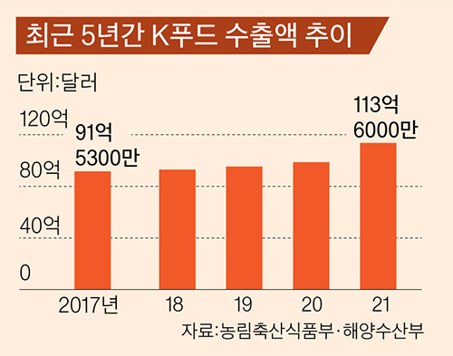
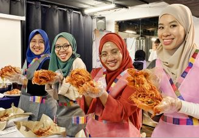
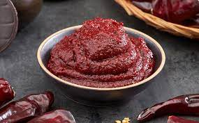
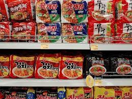

한국의 음식 / K-Food
한국의 음식 / K-Food
한국의 음식에 대해 말해보자
2021년도 K푸드 수출액은 사상 최초로 100억달러를 돌파했다.
아래 사진은 2017년부터 2021년도 까지의 K푸드 수출액 추이를 나타낸 것이다.
계속해서 수출액이 증가하고 있는것을 볼 수 있다.
K푸드에 세계인이 열광하는 이유는 K팝이나 드라마, 유튜브 먹방 같은 한류 콘텐츠가 한국 음식에 대한 관심을 높인 게 첫 번째고,
아시아 음식은 ‘건강하다’는 이미지가 서구권에서 자리 잡으면서 K푸드 역시 이 대열에 들어간 게 두 번째다.

김치, Kimchi

첫 번째로 소개할 한국의 음식은 누가 뭐라해도 한국의 대표음식으로 손꼽히는 김치이다.
올해 1~9월 김치 수출액은 9800만달러로 작년 같은 기간보다 40.3% 증가했다.
미국과 호주로의 수출이 각각 69.1%와 76.4% 뛰었고 일본 수출도 29.3% 증가했다.
코로나19 시대에 김치 수출이 증가한 이유는 바로 ‘건강에 대한 관심 증대’이다.
김치는 면역력 강화에 효과적인 대표 발효 식품이다.
식물성 재료로만 만든 '비건 김치' 등을 개발해 새로운 수요층을 공략한 것도 수출 증가의 한 요인으로 꼽을 수 있다.
각국 소비자들은 저마다 김치를 응용한 독특한 레시피를 개발하며 김치의 인기를 거들고 있는데,
미국에서는 김치 파우더와 함께 김치 주스 등 발효 음료가 인기를 모으고 있다.
유럽에서는 마늘과 고춧가루의 양을 줄이고 강황, 당근, 레몬 등을 추가해 현지인의 입맛에 맞춘 김치가 판매 중이다.
아시아 국가에서는 김치 소스 및 향신료가 활발하게 유통되고 있다.
이에 농림축산식품부는 김치 효능 정보를 담은 QR코드 제작,
국제박람회 개최, 지하철 광고 게시 등 다양한 마케팅을 펼치고 있다고 한다.
김치 구매하러 가기
장류

올 들어 9월까지 장류 수출액은 7342만달러로 집계됐다.
전년 동기 대비 31% 증가한 규모다.
코로나19로 집에 있는 시간이 늘어나면서 해외 소비자들이 한국 콘텐츠를 많이 접하게 된 것이 큰 원인으로 꼽히고 있다.
유튜브와 넷플릭스, 왓챠 등 글로벌 동영상 플랫폼을 통해 떡볶이, 비빔밥, 김치볶음밥 등이 소개되면서 한국을 대표하는 소스인 고추장 소비가 증가하고 있는 것이다.
그 중에서도 드라마 ‘이태원 클라쓰’가 고추장 맛을 해외에 알리는 데 큰 역할을 했다.
고추장불고기와 순두부찌개 등 한식 메뉴를 중심으로 한 프랜차이즈 업계의 경쟁을 그린 이 드라마는 태국과 말레이시아 등 동남아시아 국가를 중심으로 큰 인기를 끌었다.
고추장은 다양한 요리에 활용 가능한 발효식품이라는 점도 수출 증가에 영향을 미쳤다.
특히 고추장은 지난 10월 국제식품규격위원회 총회에서 세계 규격으로 채택됨으로써 세계시장에서 더욱 폭넓게 유통될 것으로 보인다.
고추장 구매하러 가기
라면

라면은 작년 같은 기간에 비해 36.7% 증가한 4억500만달러어치가 수출됐다.
라면 수출이 증가한 것은 올해 초 영화 ‘기생충’이 아카데미상을 휩쓰는 등 한류 문화 확산으로 한국산 라면에 대한 인지도가 높아진 영향이 크다.
장기 보관이 가능한 간편식이라는 특성 덕분에 코로나19 상황에서 비상 식량으로도 주목받게 되었다.
미국 최대 온라인 쇼핑몰인 아마존에서 가장 인기 있는 한국 식품으로 선정될 만큼 한국 라면은 큰 인기를 끌고 있다.
코로나19가 계속되는 상황에서 ‘집콕족’이 늘어남에 따라 라면 수요는 지속될 것으로 전망된다.
라면 구매하러 가기
불닭볶음면
불닭볶음면이 해외에서 인기를 끌 수 있는 이유는 유튜브가 크게 작용했다.
유튜브에서 불닭볶음면의 도전하는 영상들로 인해 도전의 아이콘이 되었다.
유명 유튜버인 '영국 남자'가 불닭볶음면 먹기에 도전하는 영상을 올린 것이 인기몰이의 신호탄이었다.
해외로 팔린 라면 2개중 1개는 불닭브랜드일 정도로 해외에서 많은 인기를 얻고 있다.
불닭볶음면 구매하러 가기